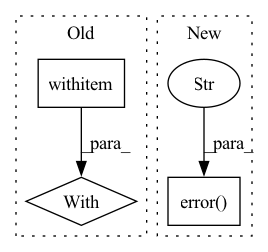

Pattern ID :6260
Before Change
def main():
// This function runs indexing for all images and then starts the restful query API
f = Flow.load_config("flows/index.yml")
with f :
f.index(inputs=DocumentArray.from_files(IMAGE_SRC),
request_size=1, read_mode="rb", size=1)
After Change
index(num_docs)
if task == "query_restful":
if not os.path.exists(workspace):
logger.error(f"The directory {workspace} does not exist. Please index first via `python app.py -t index`" )
sys.exit(1)
query_restful()
In pattern: SUPERPATTERN
Frequency: 3
Non-data size: 3
Instances Fragment ID: 21670770
Project Name: jina-ai/examples
Commit Name: 28f575d76dbe81664c54825de9b4d696e3be07ca
Time: 2021-05-26
Author: jakob.kruse@jina.ai
File Name: pokedex-with-bit/app_yaml.py
M Class Name: AnonimousClass
N Class Name: AnonimousClass
M Method Name: main(2)
N Method Name: main(0)
M Parent Class:
N Parent Class:
M File Name: pokedex-with-bit/app_yaml.py
N File Name: pokedex-with-bit/app_yaml.py
M Start Line: 17
M End Line: 22
N Start Line: 54
N End Line: 72
Before Change
track_event(AnalyticsEvent.COPIED_STACK)
with console .status(f"Copying stack `{source_name}`...\n"):
repo = Repository()
try:
stack_ = repo.get_stack(source_name)
except KeyError:After Change
try:
stack_wrapper = source_repo.zen_store.get_stack(source_stack)
except KeyError:
cli_utils.error(
f"Stack `{source_stack}` cannot be copied as it does not exist."
)
if target_stack in target_repo.stack_configurations:
cli_utils.error(
f"Can"t copy stack as a stack with the name "{target_stack}" " Fragment ID: 21670768
Project Name: maiot-io/zenml
Commit Name: 6a70f645ea3c125142154c6db0f1e1f689ced82b
Time: 2022-06-16
Author: schustmi@users.noreply.github.com
File Name: src/zenml/cli/stack.py
M Class Name: AnonimousClass
N Class Name: AnonimousClass
M Method Name: copy_stack(4)
N Method Name: copy_stack(2)
M Parent Class:
N Parent Class:
M File Name: src/zenml/cli/stack.py
N File Name: src/zenml/cli/stack.py
M Start Line: 1052
M End Line: 1076
N Start Line: 1067
N End Line: 1121
Before Change
with ScopedConfigure(None, None):
info("^^^ should see b = 33.3")
with ScopedConfigure (str(tmp_path / "test-logger"), ["json"]):
record("b", -2.5)
dump()
reset()After Change
logger.record("a", "longasslongasslongasslongasslongasslongassvalue")
logger.dump()
logger.warn("hey")
logger.error("oh" )
@pytest.mark.parametrize("_format", ["stdout", "log", "json", "csv", "tensorboard"])
def test_make_output(tmp_path, read_log, _format): Fragment ID: 21670775
Project Name: dlr-rm/stable-baselines3
Commit Name: b52c6fc18fa4b48a259c839e8159b6c9f826e8ad
Time: 2021-06-14
Author: antonin.raffin@ensta.org
File Name: tests/test_logger.py
M Class Name: AnonimousClass
N Class Name: AnonimousClass
M Method Name: test_main(1)
N Method Name: test_main(1)
M Parent Class:
N Parent Class:
M File Name: tests/test_logger.py
N File Name: tests/test_logger.py
M Start Line: 110
M End Line: 145
N Start Line: 146
N End Line: 173